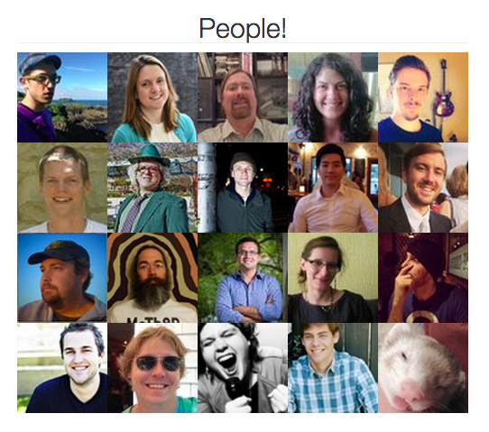
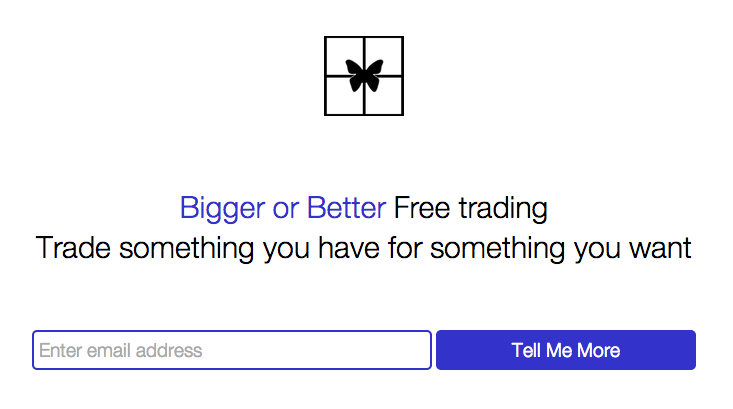
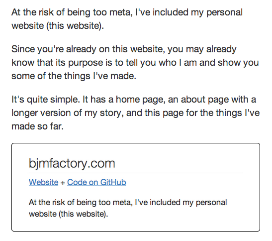

Have a look at some of the websites I've made so far. I also put a link to my code on GitHub for each one.
Cafe Bedouins is a weekly meetup in Austin. It's a time to work on side projects.
The first time I went, I met Damon Clinkscales, the guy who started the meetup. I offered to help him make a new website for Cafe Bedouins.
He had this idea to show Twitter profile photos of the people who are invested in Cafe Bedouins.
It took me a little while, but with his help I figured out how to get data from a JSON file using Javascript and display it to the page.
Also, the image alt tags show the persons name and Twitter screen name, and clicking on their face takes you to their Twitter profile!
It was so cool to get this working. It was also great practice using Javascript, jQuery, AJAX, JSON, and Bootstrap.
If you're in Austin and you've got a side project you've been wanting to work on, stop by! It's every Tuesday from 7-11pm at Houndstooth Cofeee on 42nd and Lamar.
Also, here's the Cafe Bedouins Twitter.
Bigger or Better is a platform that allows anyone to trade something they have for something they want for free.
It's a project some of my entrepreneurial friends have been working on, and it will eventually be a mobile app.
I made a landing page for them. Our goal was to have something simple and clean.
It was good practice using HTML and CSS to customize the styling and layout of a form, and it also helped me get more familiar with Bootstrap.
At the risk of being too meta, I've included my personal website (this website).
Since you're already on this website, you may already know that its purpose is to tell you who I am and show you some of the things I've made.
It's quite simple. It has a home page, an about page with a longer version of my story, and this page for the things I've made so far.
I built this site with HTML and CSS, and I made use of some Bootstrap CSS as well.
If I were to build it out further, it would make more sense as a PHP site, but I'm planning to keep it simple (it's just those 3 pages now).
Most likely I'll end up replacing it with a wordpress site with a theme that I customize, but this is fine for now. I wanted to finish something, so that you could read what you just read.